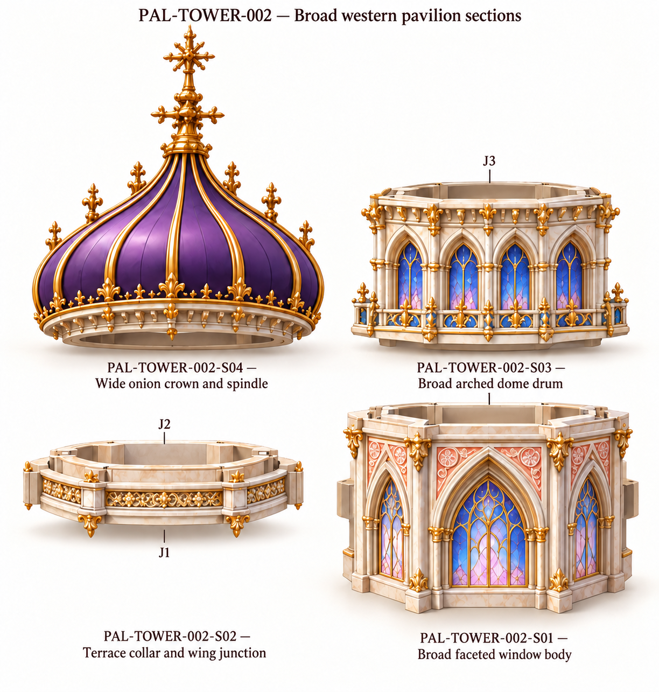
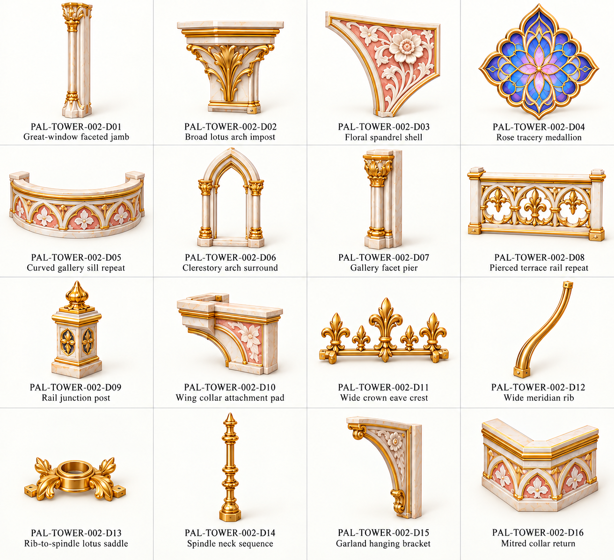
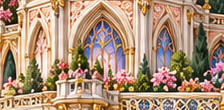
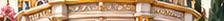

Original source crop

Draft component references. Original front controls visible proportions. No models or verified physical joins.
All families · Assembly/review notes · Part IDs · Source and join schedule
Tip saddle/spindle/rib profile simplified after owner distortion report. Displayed parts use independent illustration scales; source crop controls assembled proportions.



